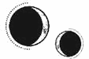

CAPÍTULO 61
Julius 1787
Cuando Helena se quedaba sin ritos de despedida que celebrar, Crowther se aseguraba de mantenerla ocupada.
Teniendo en cuenta lo útil que había sido con Mandl, él no veía motivos para no seguir aprovechándose de ella y así reforzar su posición en el Consejo. Aunque Helena se negaba a emplear la vivemancia como método de tortura, se había mostrado dispuesta a experimentar con la animancia para encontrar una forma eficaz de sonsacarles información a los prisioneros. Y no podía permitirse cometer errores.
La Helena de dos años atrás no habría reconocido a la persona en la que se estaba convirtiendo. Ahora cruzaba límites que jamás se habría creído capaz.
A veces, iba tan lejos que tenía la sensación de estar correteando bajo la piel de los prisioneros, como si su consciencia ocupara por un momento el mismo espacio mental que la de ellos. Cuando eso ocurría, los prisioneros acababan enfermos, con el cerebro ardiendo, como si los hubiera envenenado. Pero el procedimiento era efectivo, así que no prestó atención a las secuelas hasta que Crowther le dijo que dos de sus «sujetos de prueba» habían muerto.
Nunca había matado a nadie antes. No de esa forma. A partir de entonces, se volvió mucho más cuidadosa, pese a que Crowther consideraba su actitud una pérdida de tiempo y compasión. Helena descubrió que las fiebres que sufrían eran menos virulentas cuando las sesiones eran breves pero recurrentes, como si los prisioneros desarrollaran cierta tolerancia a su poder. Una vez alcanzado ese punto, Helena podía extraer la información que deseara con mucha más facilidad.
—Creo que ya sé cómo curar a Titus Bayard —le dijo una noche a Shiseo.
La Llama Eterna había escogido a un nuevo general para el Consejo. Habían perdido a tantos hombres durante el bombardeo que la línea de sucesión se había truncado. Hutchens tenía un buen historial, pero se dejaba llevar demasiado por la admiración que sentía por Luc.
Shiseo dejó a un lado el cuchillo de obsidiana que estaba preparando y Helena respiró hondo antes de continuar:
—Cuando hirieron al general Bayard, yo no entendía qué tenía que hacer. Me equivoqué al tratar la herida como si fuera cualquier otra lesión. A principios de año ya se me había ocurrido una manera de abordar el problema, pero Titus no reaccionó bien cuando intenté ponerla a prueba. Gracias al trabajo de las últimas semanas —bajó la vista—, he caído en la cuenta de que la clave está en avanzar poco a poco para reforzar su tolerancia. Una vez que lo consiga, creo que mi idea funcionará.
Shiseo ladeó la cabeza.
—¿Cómo?
Helena se humedeció los labios.
—Los pensamientos y los recuerdos son como caminos en la mente. Como yo no lo sabía cuando curé a Titus, acabé dejándolo atrapado en su propio cerebro. A lo mejor ya es demasiado tarde, pero tal vez pueda ofrecerle una vía de escape si consigo entrar en su cabeza. —Tragó saliva con incomodidad—. Es algo que pongo en práctica en mi propia mente de vez en cuando. Recurro a la resonancia para alterar mis pensamientos y darle a mi cerebro una nueva ruta.
—Suena complicado —dijo Shiseo tras considerarlo.
Helena agachó la mirada.
—Creo que tengo que intentarlo.
—Haz lo que consideres oportuno —intervino Crowther con cruel interés—. Si matas a Bayard, pues tendremos una boca menos que alimentar.
—Solo intento ayudar —replicó ella tragando saliva con fuerza.
Crowther torció el gesto en un gesto desdeñoso.
—Cuando quiera que hagas algo, Marino, te lo pediré.
Acababan de enterarse de que habían enviado a Kaine a Hevgoss en una misión diplomática sin previo aviso. Él ni siquiera había podido ponerse en contacto con Helena directamente. Solo le había dado tiempo a enviar un mensaje en clave por uno de los canales de radio antes de partir sin despedirse.
Lo único que iba bien era el embarazo de Lila, que estaba aburrida pero sana, mucho más de lo que Helena la había visto en años. No había motivos para temer un riesgo de aborto.
—¿Estás bien? —le preguntó Lila a Helena, que tenía una mano puesta sobre su vientre y había cerrado los ojos para intentar distinguir el latido del bebé del de su madre y comprobar que todo estuviera bien.
La frecuencia cardiaca fetal siempre era mucho más rápida de lo normal, pero percibirla junto a la de otra persona resultaba confuso.
Helena abrió los ojos, secos e irritados por el cansancio.
—Sí, estoy bien —respondió, aunque tenía la sensación de estar muriéndose por dentro.
Había visto muy poco a Kaine en los últimos días y ahora se había marchado y no sabía cuándo volvería. Ya ni siquiera se esforzaba por salvar a la gente, solo pasaba los días esperando a que murieran.
Lila la miró escéptica.
—Pues cualquiera lo diría, porque pareces llevar días sin dormir. Pace me comentó que has estado bastante malherida. ¿Estás ya recuperada del todo? Tú más que nadie sabes lo importante que es sanar bien.
Helena negó con la cabeza.
—No es por eso. Los turnos que me han asignado son más largos, pero no tan duros. Tengo que irme, hay… mucho trabajo que hacer.
—Sé que jamás me lo dirías, pero me consideras una egoísta, ¿verdad? —dijo Lila cuando se puso de pie.
Helena suspiró y se miró las manos.
—Has sufrido mucho, así que no te culpo por querer algo bueno en tu vida. Lo que no entiendo es por qué has tomado esta decisión precisamente ahora. Yo que tú me marcharía a Novis, donde al menos no correrás peligro. —Se encogió de hombros—. Puede que tener al heredero del principado allí sirva para convencerlos de que nos envíen suministros médicos.
Lila se había negado a dejar la «cuarentena» y todavía fingía estar presa de un brote de tos de los pantanos.
—Quiero aguardar un poco más, solo para estar segura.
Rhea la esperaba junto con Titus en una de las salas privadas. Helena le había enviado un mensaje para decirle que quería hablar con ella sobre un posible tratamiento.
—¿En qué consistiría exactamente? —le preguntó la mujer, sujetando el brazo de su marido para que no se alejara de ella.
—Sería un procedimiento a largo plazo —explicó Helena mientras se secaba las manos contra el hábito negro—, pero similar a lo que intentamos a principios de año. Ahora ya sé cómo controlarlo y, si trabajamos despacio, con intervenciones breves seguidas de periodos de recuperación, creo que Titus podría adaptarse al proceso. La idea es curarlo sin provocar la reacción que tuvo la última vez.
Rhea estrechó la mano de Titus y se inclinó hacia Helena. Le brillaban los ojos.
—Entonces ¿ya lo has puesto en práctica antes? —preguntó con la voz temblorosa de emoción.
Helena carraspeó, porque no quería darle demasiadas esperanzas.
—No exactamente. Era un procedimiento similar. Pero te advierto que conlleva ciertos riesgos. ¿Sabes lo que es el mitridatismo? —Rhea negó con la cabeza—. Es una técnica que consiste en administrar dosis pequeñas de veneno con la idea de desarrollar inmunidad a él. Para curar a Titus, tendré que entrar en su cerebro y el proceso será… similar, porque su sistema inmunitario responderá a mi resonancia con fiebres. Habrá que hacerle un seguimiento para mantener la reacción bajo control y hacer pausas más largas si le sube demasiado la temperatura. La idea es conseguir que tolere mi resonancia en las zonas más delicadas del cerebro.
Aunque había omitido algunos detalles, todo lo que le había dicho era cierto.
Rhea asintió.
—¡Sí! Sí, haz lo que consideres…
La mujer se interrumpió cuando Luc abrió la puerta de la sala y entró seguido de Sebastian.
—¿Qué haces, Rhea? —le preguntó sin aliento.
—Helena ha encontrado la manera de curar a Titus —explicó ella, sorprendida por la intrusión.
Luc miró a Helena con una expresión severa, intensa y febril.
—No me creo que lo estés diciendo en serio. —Helena se dispuso a contestar, pero no le estaba hablando a ella. Se había vuelto a mirar a Rhea—. ¿De verdad confías en ella después de lo que le hizo a Soren?
Helena se estremeció y su mente estuvo a punto de lanzarse de cabeza al interior de esa dolorosa herida que aún estaba abierta en su interior. Tragó saliva con fuerza.
—Soren murió, Luc. Siento en el alma no haber podido salvarlo, pero este procedimiento podría funcionar. Piensa en lo que significaría tener a Titus de vuelta.
Luc la miró de nuevo con desagrado.
—¿Eso es lo que te importa? ¿Cuánto puede valer alguien para la causa? —Miró a Titus, que se había puesto nervioso al percibir la tensión en el ambiente—. ¿Es que acaso solo lo ves como un efectivo militar echado a perder después de lo que le hiciste?
—¿Qué? No, eso no es lo que quería decir.
La mirada de Luc era tan abrasadora como un sol ardiente.
—Como le pongas un solo dedo encima, te juro que…
—No lo hará —intervino Rhea—. Gracias, Helena…, es decir, sanadora Marino, aprecio la oferta, pero creo que será mejor dejarlo.
Luc asintió bruscamente, se giró sobre los talones y se marchó sin mirar atrás. Sebastian les dirigió una última mirada indecisa a Rhea y a Titus antes de salir tras él. En cuanto se retiraron, Rhea se desmoronó con un jadeo y se cubrió el rostro con las manos.
Helena se había quedado sin palabras. Aturdida por la conmoción, vio que Rhea se incorporaba sin mirarla y sacaba a Titus de la sala.
Una vez sola, Helena se puso los guantes y se dirigió hacia la Torre de Alquimia, pero se encontró a Sebastian esperándola dentro del ascensor. Para su sorpresa, había regresado solo y parecía alicaído. Tras una breve pausa, le tocó el hombro a Helena.
—Te honra haberlo intentado.
Helena no fue capaz de mirarlo a la cara, así que clavó la vista en su pecho, en el blasón solar que decoraba su armadura.
—¿Por qué me está haciendo esto? —preguntó—. Todo el mundo lo ha entendido. Incluso quienes consideran que me equivoqué. Luc ni siquiera ha intentado ponerse en mi lugar.
Sebastian suspiró.
—Ya sabes por qué.
No estaba segura de saberlo, pero asintió y entró en el ascensor. Cuando se acercó a la habitación de Luc, los tres guardias que vigilaban la puerta negaron con la cabeza al unísono en cuanto la vieron, así que Helena regresó a su propio dormitorio, salió por la ventana y recorrió la suave pendiente del tejado para rodear el edificio. El cabello rubio de Luc resplandecía bajo la luz del atardecer. Estaba sentado sobre los talones, encorvado, y le daba vueltas a algo entre los dedos. Se llevó el objeto a los labios y una llamita le iluminó las yemas de los dedos cuando inhaló.
Dejó caer los hombros y todo su cuerpo pareció relajarse.
Mientras lo observaba, Helena pensó en lo dulce y alegre que había sido su rostro. La guerra lo había carcomido hasta los huesos. Allí sentado, sin su armadura, estaba tan consumido que le recordaba al exoesqueleto de un insecto, como las mudas que las libélulas dejaban en los juncos tras la metamorfosis. Ya no quedaba nada de él en su interior.
Luc exhaló lentamente y unas volutas de humo escaparon de entre sus labios.
Era opio.
Fumaba como si llevara haciéndolo toda la vida, con una indiferencia que a Helena le resultó espantosa.
Luc se apartó la pipa de los labios al verla. Su expresión se endureció, se hizo más afilada.
—Vete.
—No —replicó ella acercándose.
Él volvió a darle vueltas a la pipa entre los dedos mientras apretaba los dientes con rabia. Si la golpeaba, era muy probable que Helena cayera de la Torre y muriera.
Se detuvo a unos cuantos pasos de él.
—No pude salvarlo. Ni muriendo yo misma en el intento habría podido hacerlo. ¿Habrías preferido que hubiera sido así?
En vez de responder, Luc tembló como una hoja seca a punto de caer de su rama. Parecía estar tratando de decir algo, pero se llevó la pipa a los labios y la prendió con una débil llamita. Inhaló durante tanto rato que la pipa estuvo a punto de escurrírsele de entre los dedos.
Helena se arrodilló junto a Luc, por miedo a que se cayera del tejado, pero entonces él levantó la vista, encontró su mirada y ya… ya no parecía enfadado, sino agotado.
—¿Qué nos ha pasado, Hel?
Ella lo miró y su corazón, hambriento y falto de cariño, dio un vuelco cuando comprendió lo evidente: no era Luc el que hablaba, sino el opio.
—Una guerra.
Desvió la vista hacia el paisaje en ruinas que se extendía ante ellos. Hubo un tiempo en que la ciudad había sido hermosa.
—Antes creías en mí —dijo con voz distante—. ¿Qué he hecho para que dejes de hacerlo?
—Sigo creyendo en ti, Luc. Pero tenemos que ganar esta guerra; no podemos tomar decisiones basándonos en la historia que queremos contar luego. Hay demasiado en juego.
—No —replicó Luc—. Así ganaremos. Así hemos ganado siempre. Así ganaron mi padre, mi abuelo y todos los principados hasta el mismísimo Orion. Todos ganaron confiando en que el bien siempre vence al mal, y yo he de hacer lo mismo.
Helena lo miró angustiada y él chasqueó los dedos para activar sus anillos de ignición. Dejó que el fuego le lamiera la palma de la mano, que le corriera por los dedos, y lo acunó como si fuera un gatito. Cerró el puño en torno a él y lo convirtió en una única llama antes de llevarse la pipa a los labios para prenderla una vez más.
Helena apretó el puño y reprimió un estremecimiento cuando lo oyó inspirar hondo.
—Pero ¿qué pasará si no es así de simple? —insistió—. Todos los que ganan dicen que ellos fueron los buenos, pero en realidad son los que cuentan la historia. Ellos deciden cómo recordarla. ¿Y si nunca fue tan simple?
Luc negó con la cabeza.
—Orion fue bendecido por el sol porque se negó a renunciar a su fe.
Helena suspiró exasperada y enterró la cara entre las manos.
Oyó un chisporroteo seguido del siseo de la pipa al evaporarse el opio.
—Luc…, por favor, déjame ayudarte. —Ella hizo amago de acercarse.
Él se apartó y un inesperado destello de rabia le surcó el rostro.
—No… me toques.
Estaba acercándose peligrosamente al borde de una caída descomunal, como si lo estuviera llamando el abismo. Helena ya no sabía cómo hacerle entrar en razón ni qué decir para que la escuchara.
—¿Te acuerdas de lo que te prometí la noche que viniste aquí, Luc? —le preguntó en tono suplicante.
Luc no respondió. Tenía la mirada perdida; el atardecer delineaba sus rasgos demacrados como si los cubriera de oro.
—Te prometí que haría lo que fuera por ti. —Cerró el puño—. Tal vez no entendiste hasta dónde estaba dispuesta a llegar.
—No digas eso —le pidió como si hubiera recuperado una repentina lucidez—. No hagas como si toda la culpa fuera mía. Pensaba que podrías curarlo.
Ella cerró los ojos.
—A veces, la gente muere. Ni tú ni yo ni nadie podemos salvar a todo el mundo, pero te pido por favor que me dejes intentar curar a Titus.
—No puedo.
Luc se puso en pie, bajó con torpeza hasta el balcón de su dormitorio y desapareció.
Llevaba dos semanas sin tener noticias de Kaine cuando, al fin, el anillo se calentó.
Helena salió corriendo del Cuartel General sin mirar atrás y, al llegar al tejado y ver a Kaine esperándola allí junto a Amaris, estuvieron a punto de fallarle las piernas. En su uniforme impoluto llevaba una hilera de medallas, como si acabara de participar en algún acto oficial.
—Has vuelto —fue lo único que consiguió decir mientras extendía los brazos antes de haber llegado a su lado siquiera.
Kaine la atrajo hacia sí para abrazarla.
—¿Todo bien estas últimas semanas?
Helena se las arregló para asentir, pero acabó apoyando la cabeza contra su pecho. Estaba tan agotada que cerró los ojos, creyendo por un instante que desfallecería mientras escuchaba los latidos de su corazón. Había vuelto. No podía pedir más. Pero tenía la sensación de que había pasado una eternidad, como si cada minuto de su ausencia le hubiera abierto una herida.
—¿Algo va mal? —preguntó él al cabo de un momento.
Todo.
—Nada —dijo ella—. Es que creo que dejé de respirar cuando te marchaste.
Kaine le pasó los brazos por los hombros de nuevo, aunque con rigidez, como si su mente estuviera en otra parte. El miedo se extendió por las venas de Helena como la sangre por el agua.
Levantó la cabeza.
—¿Qué pasa?
Kaine no la estaba mirando, sino que tenía la vista clavada en la luz cegadora de la Torre de Alquimia.
—Imagino que ya lo sabrás, pero el viaje ha sido una misión diplomática. Nos enviaron a Hevgoss para formalizar una alianza. Llevaremos a cabo una investigación alquímica en su nombre a cambio de que nos apoyen con los mercenarios que luchan entre sus filas.
—Sí, ya lo suponía.
—El nuevo embajador hevgotiano me ha… cogido cariño. Mi principal responsabilidad ahora es mantenerlo entretenido. ¿Queda alguna orden de Crowther pendiente por cumplir?
Helena negó con la cabeza.
—No, estábamos esperando a ver qué ocurría. Querrá un informe, pero eso es todo por el momento.
Kaine la miró con suspicacia.
—¿Nada más? —En su voz se notaba cierta tensión.
—No, nada más. Piensa que acabas de volver.
En vez de mostrarse aliviado, adoptó esa expresión tensa que se adueñaba de su rostro cuando tenía la certeza de que Helena no estaba bien y él no sabía por qué. Dio un paso atrás y la estudió de arriba abajo.
—¿Qué ha pasado?
Ella lo miró desconcertada y negó con la cabeza.
—Nada.
Helena sabía que no la creía, pues el miedo se abrió paso por sus facciones. Le habría gustado tener alguna tarea que encargarle; estaba claro que Kaine pensaba que le daban esa tregua porque a ella le había pasado algo. Finalmente, suspiró y le cogió la mano.
—Después de que Althorne e Ilva murieran, le dije a Crowther que estaban abusando de tu colaboración y le pedí que bajara un poco el ritmo.
—¿Y él accedió sin más? —resopló incrédulo.
—No, hice un trato con él. Lo de la obsidiana y la inestabilidad en el Consejo lo han dejado en una posición vulnerable. Como necesitaba a alguien de su lado, le dije que yo lo apoyaría con la condición de que me deje supervisar tus misiones de ahora en adelante.
En vez de mostrarse aliviado, Kaine se liberó de su agarre.
—¿Por qué has hecho eso? —escupió—. ¿En qué momento pensaste que eso me ayudaría? Es lo último que quiero.
Un pinchazo de dolor, cansancio y rabia la atravesó.
—¿Por qué? ¿Me vas a decir que solo tú tienes el derecho de proteger a las personas que te importan? ¿Se supone que debo quedarme de brazos cruzados mientras ganas la guerra por mí? ¿Es así como ves lo nuestro? —Hizo un gesto furioso señalando el espacio entre los dos.
—Ese era el trato.
—Yo nunca accedí a eso. Además, no estoy haciendo nada peligroso. Ya ni siquiera me dejan salir del Cuartel General.
Kaine la miró furioso.
—Venga…, no seas así —le suplicó Helena.
Pero Kaine no dio su brazo a torcer. Un muro gélido los separaba, como si todos sus fantasmas se hubieran congregado de repente a su alrededor. La muerte los había calado hasta los huesos.
La guerra era un abismo insaciable que se lo tragaba todo. Siempre quería más: otra vida, un poco más de sangre. Los obligaba a ser mejores, más listos, implacables, rápidos y calculadores. A aceptar otra dosis de dolor.
Nada era suficiente.
Pero Helena ya no quería sacrificar más; lo que le quedaba era demasiado valioso como para perderlo. Aun así, de ella se esperaba que fuera dócil, que cooperara, que fuera un trofeo capaz de ofrecer consuelo cuando la realidad era muy distinta.
Tragó saliva con amargura.
—¿Qué esperabas que hiciera?
—¡No quiero que te involucres en esta puta guerra! —exclamó Kaine con la voz rota por la rabia—. Me paso las horas temiendo lo que podría ocurrirte si no cumplo con mi cometido. Si me capturan, no te haces una idea de lo que…
—Lo sé perfectamente —lo interrumpió sin miramientos—. ¿Qué te crees que hago yo todo el tiempo? Yo soy quien se encarga de curar a todas las personas que los inmarcesibles no consiguen matar. Yo traté… traté a los prisioneros que encontraron en el laboratorio del puerto Este y… tuve que verlos a todos morir. A todos. Soy tan consciente de los riesgos que corremos que a veces pienso que van a acabar volviéndome loca. ¿Por qué crees si no que me esfuerzo tanto?
Se le quebró la voz y se dio la vuelta mientras la desesperación la devoraba por dentro. Se había repetido que todo mejoraría cuando Kaine regresara, que podría respirar tranquila de nuevo.
Pero lo único que sentía era un renovado pavor; tenía la sensación de que todo se desmoronaba a su alrededor sin que ella pudiera hacer nada para detenerlo. Acabaría pasando cada segundo de su vida preparándose para lo peor, incapaz de disfrutar siquiera de los momentos que compartiera con Kaine.
—Avisaré a Crowther de tu regreso. —Habló con tono desprovisto de emoción—. Y te diré lo que quiere.
Deseó desaparecer. Estaba harta de todo, de suplicarle que tuviera cuidado de no dejarse atrapar, que no muriera, que regresara con ella. Estaba harta de tratar de convencerse a sí misma de que una promesa significaba algo en una guerra como aquella.
—Ten cuidado.
—Espera. —Kaine la agarró del brazo—. No te vayas.
Helena negó con la cabeza.
—Estoy muy cansada… No quiero que nos peleemos.
—No lo haremos. —Ahora la miraba con más atención—. Ven conmigo. Te has dejado la piel trabajando y no les pasará nada por prescindir una noche de ti. Te prometo que no nos pelearemos.
Helena asintió con esfuerzo. El tiempo se le pasó como un borrón a lomos de Amaris; de hecho, casi ni notó el viento. Estaba medio dormida cuando la quimera aterrizó, así que Kaine la llevó en brazos hasta la cama. Le quitó los zapatos, se sentó en el borde del colchón y le puso una mano entre los omoplatos.
Kaine estaba a salvo. Había vuelto.
Helena se despertó en cuanto apartó la mano.
—Tengo que comer algo y darme una ducha —explicó el chico tras una breve pausa.
Ella le cogió la mano y se la estrechó con tanta fuerza que le clavó las uñas en la piel.
—Tuve miedo de que murieras. Dijiste que no podías marcharte sin una serie de preparativos, pero desapareciste de un momento a otro y pensé… pensé que no volverías. —Tenía la voz pastosa—. Te expones a un peligro tras otro y no puedo pedirte que pares de hacerlo.
—Ya sabes que lo dejaría todo si estuviera en mi mano —dijo acariciándole los nudillos con el pulgar—. Huiría contigo sin mirar atrás.
—Lo sé… —Se le rompió la voz—. No mueras, Kaine. No me dejes.
Kaine se tumbó a su lado y no se movió hasta que Helena dejó de llorar y se quedó dormida.
Cuando el colchón volvió a hundirse, Helena se despertó y lo encontró al otro lado de la cama, con el cabello húmedo pegado a la frente. Se acurrucó entre sus brazos y cerró los ojos mientras deslizaba los dedos por su piel. Lo reconocería incluso a ciegas.
Kaine, por su parte, le cogió la mano, hizo que se tumbara de espaldas y se inclinó sobre ella para observarla con esa tristeza indeleble tan suya, hasta que Helena levantó la cabeza y lo besó. Él subió la mano hasta rodearle el cuello, apoyando su pulgar bajo la mandíbula, y profundizó el beso lentamente. Helena le enterró los dedos entre los mechones plateados.
Nunca había imaginado que llegaría a conocer a una persona de una forma tan íntima. Sabía que Kaine le besaría ese punto del cuello donde su pulso era más visible. Reconocía la forma en que su cuerpo se movía al inclinarse sobre ella, el contacto de sus manos en las caderas, la caricia de sus dientes en la cara interna de los muslos y el calor de su lengua.
—Eres mía. Solo mía —le dijo mientras la besaba.
—Ahora y siempre.